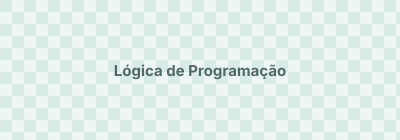
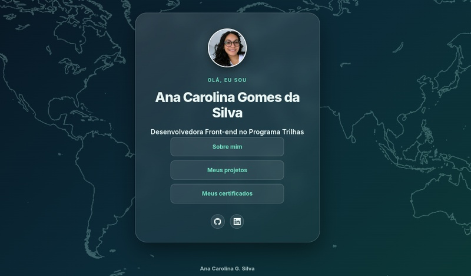

Sistema Gamers
Projeto desenvolvido no módulo de Lógica de Programação Com JavaScript do Programa Trilhas.
Ver repositório ↗ Ana Carolina Gomes da Silva
Desenvolvedora Front-end no Programa Trilhas
Ana Carolina Gomes da Silva
Desenvolvedora Front-end no Programa Trilhas

Projeto desenvolvido no módulo de Lógica de Programação Com JavaScript do Programa Trilhas.
Ver repositório ↗
Este portfólio, criado como primeiro desafio do Programa Trilhas, com páginas de apresentação, projetos e certificados.
Ver repositório ↗